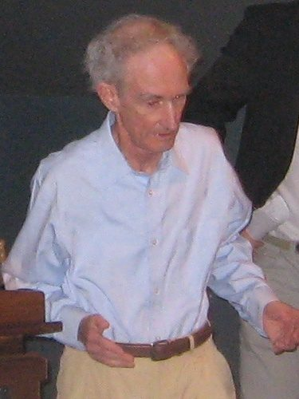
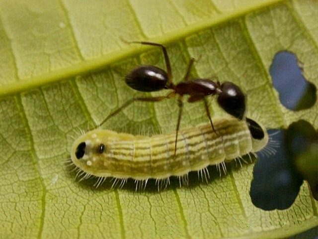
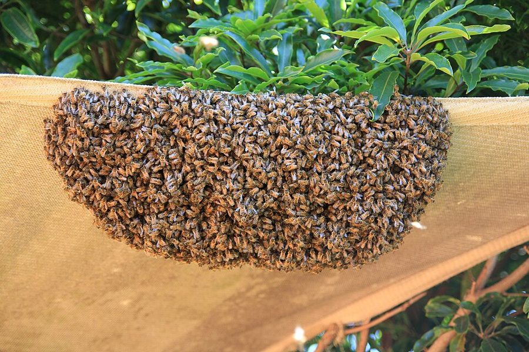
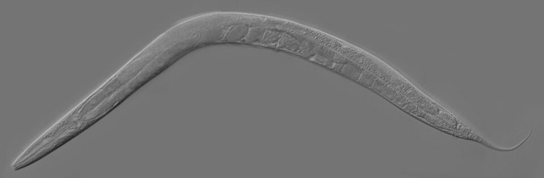

artfully macabre understatement
… to quote Edward Wilson’s artfully macabre understatement
又巧妙又阴森的轻描淡写
作者夸 Wilson 的笔法：把锯掉宿主蚁后的头说成「它唯一专擅的那件事」，口气平静，内容骇人。
第 13 章的后半，也是全书的最后一页。上一页把基因的作用一路推到身体外面；这一页先用两种更极端的昆虫例子收尾，再掉头回答本章开头的问题：基因各自为己，身体为什么这么团结，生命为什么要以一个个「个体」的形式存在。Dawkins 用的工具是「复制因子 / 载体」这对词和一个虚构的海藻对照，最后写下全书的宣言。读的时候抓两条线：这对词怎样拆开「基因还是个体」的争论；「瓶颈」为什么能造出个体。
上一页停在一个问题上：基因的作用没有身体这道墙，身体为什么还这么团结？这一页 §6 再给两组最极端的操纵例子，第 50 段把它们收成一条「中心法则」；第 51 段作者明说要回到本章第 1 段的张力。第 53 段的「第 3 章」「第 7 章」分别指讲基因选择和批评类群选择的那两章；第 61、85 段的英德桨手是第 5 章的比喻。2006 年导言第 7 段说第 1 章的「生来自私」会误导，并说「部分原因」是他 1978 年才想清楚这一页的区分；第 8 段又用它宣布基因和个体之争已经化解。
基因各自为己，为什么身体像一个目标统一的整体？说到底，个体为什么存在？
读的时候带着这几个问题。不用先找答案，读完回来对照「检查一下理解」。
这一页先把上一页的路走到头，再掉头。§6 是最后一组例子，讲完马上收成一条定理。§7 开头作者说「终于回到开头的问题」，读到这里要记起第 1 段的张力；他不直接作答，先换一对词，把一场争论拆成两场。§8 看上去又岔开了：从基因怎样聚进细胞讲起，到第 67 段突然冒出两种海藻，那是作者编的思想实验，不是真植物。§9 分三点讲瓶颈的后果，前两点关于发育，第三点关于遗传；第 80 段是只写给专业读者的旁注，可以略读。§10 把全书压成一份宣言，回到第 2 章的复制因子。
作者落在哪：基因和个体不是争同一个位置的对手：基因是被复制的复制因子，个体是替它们行动的载体。个体能成为好载体，是因为体内的基因走同一条公平的出口，每一代又挤过一个单细胞的瓶颈。身体在实践上极重要，在理论上却不是非有不可。
这一页是原书第 13 章的第 6–10 节。原书各章没有小标题，粗体的节名是本站起的，下面是这一节第一段开头的几个词，在电子书里搜它就能跳过去。读完打个勾。
先把这一页用到、作者默认你懂的几个概念讲一遍。讲的是概念本身，作者拿它推出什么，读原书时自己看。前几章讲过的复制因子、生存机器、选择单位、进化上稳定的基因组，和上一页的延伸的表型、减数分裂驱动，点进去看。
把「谁被选择」拆成两个角色的一对词。复制因子是被复制的东西：一份份拷贝连成谱系，某一份上出的差错会传给它后来的拷贝，基因就是。载体是复制因子造出来、替它们和世界打交道的东西，通常是一个个身体：它会跑、会吃、会死，自己却不被复制。竹节虫断了一条腿，后代照样六条腿齐全，这就是身体不算复制因子的理由（第 3 章注 10，见 03b 的尾注一节）。载体不是新东西，就是第 2 章起说的生存机器，换一个更中性、更强调职责的名字：运载。Dawkins 说自己 1978 年才想清楚这个区分，1982 年在《延伸的表型》和论文《复制因子与载体》里把它定成术语；哲学家 David Hull 1980 年提出几乎同样的区分，把载体那一方叫「互动者」（interactor）。程序员可以这样想：仓库里的代码是复制因子，跑起来的进程是载体；干活、崩溃、被淘汰的是进程，传下去的却是代码。
在这一页：第 52 段下定义，第 53–57 段用它把两场争论分开。2006 年导言第 7 段说「生来自私」会误导，「部分原因」是当时还没分清这对词；第 8 段说有了它，基因和个体之争就化解了，两种单位都重要（见选择单位）。
指每一代都从一个细胞开始、又以产出单个细胞告终的生命周期。一头大象有亿万个细胞，起点是一个受精卵，一生的「产品」又是一个个精子或卵子，像沙漏的两头。反面是成块分家：一截枝条、一块珊瑚断下来就长成新个体，后代一开始就是一大群细胞。瓶颈的后果有三层（见 §9），遗传上的一层最好懂：有瓶颈时，后代体内所有细胞都出自同一个细胞，彼此几乎是克隆，只有之后的新突变能把它们分开一点；成块分家的后代里，细胞可能来自母体里隔得很远的几支，各带各的突变。有没有性无关紧要，无性的单细胞孢子也是瓶颈。程序员可以类比：每次都从同一份干净镜像重新部署，和把一台跑了多年、各处打过不同补丁的机器整块克隆一份，两者的差别。
在这一页：第 59 段提出，第 66 段定义，第 67–69 段用作者虚构的瓶藻和散藻对照，第 71–81 段讲它的三个后果。
多层选择的一笔基本账。设想一种对群体有利、对自己不利的性状，比如替大家站岗：在每个群体内部，有这种性状的个体总吃亏，越来越少；但这种个体多的群体整体兴旺，能分出更多后代群体。最后这种性状是增是减，看两股力量谁大，而这取决于差异主要落在哪里：群体之间差得多、群体内部差得少，群体层面的选择占上风；反过来，群体内部的竞争占上风。George Price 1970 年代初提出的 Price 方程，能把这两部分精确地拆开。所以「类群选择能不能起作用」不是立场问题，是这个比例够不够大的问题。
在这一页：第 80 段，作者标明只写给有专业兴趣的人：把一个身体看成一「群」细胞，瓶颈拉大了「群」与「群」的差异，缩小了「群」内部的差异。
按在书里出现的顺序排，标题前是节号。只讲到读懂这一页需要的程度。

第 46 段引的是 May 的一句玩笑：已经命名的物种里，昆虫占了一大半，所以「近似地说」所有物种都是昆虫。作者借它说明，脊椎动物里的奇事，昆虫里总能找到更奇的；像杜鹃那样寄养后代的习性，在昆虫里独立演化了许多次。
第 47–48 段的蚂蚁都取自 E. O. Wilson 1971 年的《昆虫社会》（The Insect Societies；Wilson 见 06a）。两种 Bothriomyrmex 的蚁后单枪匹马钻进别种蚂蚁的巢（书外：宿主是 Tapinoma 属），骑在宿主蚁后背上慢慢锯下它的头，学名 regicidus（弑君者）、decapitans（斩首者）由此而来；Santschi 1906 年前后描述过这一幕。Monomorium santschii 产自北非，没有工蚁，靠宿主的工蚁替它杀死宿主自己的蚁后，Forel 1906 年描述过。这几个学名今天仍然有效。

Thisbe irenea 是蚬蝶科（Riodinidae）的一种，幼虫和蚂蚁住在一起。第 49 段说的「召唤蚂蚁的发声器」有人细看过：Philip DeVries 1988 年描述了它的几种「蚁器官」，1990 年在《科学》上报告，这种毛虫靠前胸伸到头上方的一对小杆刮出振动，顺着植物传给蚂蚁，被弄哑的毛虫招来的蚂蚁明显少。挥发物怎样改变蚂蚁的行为，见下面「对照今天」的第二张卡。

第 56–57 段拿两种「群」作对照。野外的狼群通常是一个家庭：一对繁殖的狼加上它们的子女，所以作者在括号里说狼群多半是亲属，内斗会缓和些。蜜蜂分蜂时，老蜂王带着一大批工蜂离巢另建新巢，看上去也是整块分家；但作者指出，这一群的基因前途大多押在一只蜂后的卵巢里，所以蜂巢像一个真正统一的载体（工蜂为什么不生育，见第 10 章）。
第 67 段的 bottle-wrack 和 splurge-weed 是作者编的名字，现实里没有这两种海藻。wrack 是英国海边几种褐藻的俗名，照片里的墨角藻就叫 bladder wrack；本站猜 bottle-wrack 是从这类名字化来的，bottle 点出「瓶颈」。splurge 是「一下子大把撒出去」。作者只取「单细胞孢子 / 成块断开」这一处差别做思想实验，两种藻其余一切都假定相同，也都不需要性。

第 75 段说，有些动物的细胞分裂顺序固定到胚胎学家能给每个细胞起名字，一个个体里的某个细胞在另一个个体里有确切的对应。书里没点名，最著名的例子是秀丽隐杆线虫（Caenorhabditis elegans）：John Sulston 等人 1983 年发表了它完整的胚胎细胞谱系，每次分裂、每个细胞的去向都记了下来，条条线虫都一样；成年的雌雄同体有 959 个体细胞。Sulston 和 Brenner、Horvitz 因线虫发育和细胞程序性死亡的研究获 2002 年诺贝尔生理学或医学奖。
第 82 段说的那本长书是 1982 年出版的《延伸的表型》（The Extended Phenotype），Dawkins 的第二本书，写给专业读者；上一页第 3 段他称它是职业生涯里最得意的作品。同一年他在一本论文集里发表《复制因子与载体》，第 3 章注 10 也提到这篇。几乎同时，哲学家 David Hull 在 1980 年的综述里把「复制者」和「互动者」分开，意思和复制因子 / 载体相近；后来讨论选择单位的哲学文献常把两套叫法并列。
按节排，每节前面是分节地图里的节名。标着「每个字都认识」的，是熟词生义、习语和反话，最容易读错。灰色的那几个字是原句里的位置，在电子书里搜它就能找到。
对着中译本（40 周年增订版）读的时候看这一节。下面是译本这几节里会让人读错的地方：灰字是英文原文那一处的几个词，在英文电子书里搜它；方框里是译本的原句，在译本电子书里搜它。措辞别扭但意思没错的不收。全书的勘误汇总在译本勘误。
… their habit has been reinvented so often.
译本：「它们数量众多，习性经常改变」
原文说的是：像杜鹃那样把孩子交给别人养的习性，在昆虫里被「重新发明」了许多次，也就是独立演化了很多回。不是说某种昆虫的习性变来变去。
… useful first step is to dispose …
译本：「设法使目标工蚁的母亲产下另一种蚂蚁」
原文：寄生者有用的第一步，是除掉工蚁们自己的母亲（宿主蚁后），因为她会生出和寄生者争食的后代。下文的锯头正是这「第一步」。译本的意思完全不同。
… ant nervous systems are generally highly attuned …
译本：「可以高度控制蚂蚁的神经系统」
原文这半句是作者猜「多半是化学物质」的理由：蚂蚁的神经系统一般对化学物质高度敏感。译本把理由改成了结论，好像已经知道那种物质能控制神经系统。
… formidable indeed must be the drug …
译本：「这种如此强大的力量只能来源于药物」
原文是：弑母对蚂蚁是一种格外反常的事，能驱使它们这样做的药一定非常厉害。前面还有「多半」和「假如那武器真是化学物质」两层假设。作者没说只能是药，只说若是药，那药很厉害。
… the caterpillar responsible for drugging it.
译本：「幼虫显然给蚂蚁下了药」
这一句前面原文还有：被下药的蚂蚁见什么动的东西都要咬，「耐人寻味的是」，唯独不咬给它下药的那条毛虫。译本把这个例外换成了一句别的话，而这个例外正是「操纵」的要害。
… For other purposes it is convenient …
译本：「他们更应该将注意力集中到复制因子上」
原文两句是对称的：为某些目的，生物学家盯住载体这一层方便；为另一些目的，盯住复制因子这一层方便。译本前一句加了「只」，后一句改成「更应该」，把两种视角分出了高下。
… in many respects equally important roles …
译本：「互相补充，同等重要」
原文是「在许多方面」同样重要。这个限定要紧：第 86 段作者又说复制因子在重要性上也居先，两句合起来读才准确。
… The group is too wishy-washy an entity.
译本：「群体作为竞争实体显得软弱无力」
原文先下判断（在作者看来，个体决定性地胜出），再给理由（群体这个东西太松散）。译本用「因为」把胜出当成原因、群体松散当成结果，顺序反了。
… a certain rudimentary coherence and unity …
译本：「都拥有整齐的一致性与共同目标」
rudimentary 是「初步的、粗浅的」。原文说鹿群、狮群、狼群只有一点粗浅的一致和共同目标，和单个动物的身体比起来微不足道。译本的「整齐」正好说反了。
… packs may bud off daughter packs.
译本：「母狼可以产出小狼」
原文：诚然，狼群也会分出「子狼群」；但母群里的基因并不装在一个人人份额均等的容器里传给子群。这是拿狼群和单个身体比繁殖方式，和母狼生小狼无关。
… a vehicle worthy of the name.
译本：「个体狼因此只是自身的载体」
原文是褒义：一只狼配得上「载体」这个名字，一群狼配不上。译本的「只是自身的载体」听起来是贬低，意思走偏了。
… is likely to be a kin group …
译本：「狼群更可能作为一个整体来求得生存」
原文括号里是：狼群多半是一个亲属群，这会缓和狼与狼之间的争斗。译本改成狼群作为整体求生，正好和这一段「狼群不是好载体」的论点相抵。
… appears to reproduce by broad-fronted budding …
译本：「也是通过大量繁殖得以生存的」
原文：蜂巢分蜂时，看上去像狼群一样整块分家（一大群一起走）；但细看，基因的前途大多押在一只蜂后的卵巢里。译本的「大量繁殖」丢了「成块分家」这层意思，后面的「但」就没了着落。
… is bundled into discrete, individually purposeful vehicles …
译本：「这些独立、有个体追求的载体经常组成群体」
原文：我们到处看到，生命实际上被打包成一个个分立的、各有目的的载体，比如一只狼、一个蜂巢。译本说成载体组成群体、个体被捆在群里，和这一段要追问的「为什么有个体」不对路。
… with nothing to choose between the two …
译本：「两条路线之间无法混合选择」
nothing to choose between 是「不相上下」。原文说两条合成路线一样好，所以选哪条全看哪条先占了多数；后面一句「自然选择怎样保证两条不掺在一起」是问句，译本改成了陈述。
… cooperation between genes goes on within cells
译本：「基因间的合作可以延伸到细胞之间」
原文：如今基因之间的合作发生在细胞里面；它当初大概始于原始汤里的分子。细胞之间的合作是这一段末尾才讲的下一步。
… or failed to separate after cell division
译本：「或者在结合后无法分离」
原文：细胞聚到一起，或者在细胞分裂之后没有分开，形成了多细胞身体。「分裂后没分开」是多细胞起源的一条重要路子，见「对照今天」的雪花酵母。
… are directly benefiting their own copies …
译本：「从少数专长复制的细胞中得到直接利益」
原文：每一类细胞里的基因，都在直接帮助自己在少数生殖细胞里的拷贝，那些细胞属于不朽的生殖细胞系。译本把受益的方向倒过来了。同一句前面「不同细胞里开启不同的基因」也被译成「基因成为细胞」。
… into the trillions of cells …
译本：「成为拥有成千上万细胞的成年大象」
trillions 是万亿级。一头成年大象有几万亿个细胞，「成千上万」差了好几个数量级，瓶颈两头和中间的悬殊就看不出来了。
… all many-celled animals and most plants.
译本：「所有多细胞动植物在生命循环中的共同特征」
原文对植物留了余地：瓶颈是所有多细胞动物和大多数植物的特征。许多植物能靠分株、插枝成块繁殖，所以作者没说「所有」。
… It hardly can be said to possess …
译本：「还是其已包含了许多单独的“生物”」
原文：散藻只是长着长着断成两截，几乎说不上有一代一代的分界，也说不上是由一个个分立的「个体」组成的。译本改成了一道选择题，意思不对。
… less important than it seems to us …
译本：「它看起来更像是不朽的」
原文：生物大概最后会死，但这一点没有我们凡人觉得的那么重要；就这个论证而言，繁殖出下一代，一个周期就算完了。原文没有「不朽」的意思。
… and this means the majority.
译本：「这便是大多数植物的情况」
原文：经过不同瓶颈的细胞，除了最新的那几次突变以外，其余突变都可能把它们区分开，而这就是大多数突变。说的是不同植株之间的遗传差异大。
… cooperate with each other only because meiosis …
译本：「有性繁殖生物的细胞只与自身互相合作」
原文的「只」管的是原因：有性生殖的身体里，细胞互相合作，只是因为减数分裂一丝不苟地公平。译本把「只」挪到了合作对象上。
… will cooperate with hosts to the extent …
译本：「寄生生物与宿主在某种程度合作」
原文：寄生者和宿主合作的程度，取决于它们的基因是否装在同一批生殖细胞里传下去。译本说成先合作、于是基因一同传递，把本章的核心因果倒过来了。
… rather intuitive, even impressionistic style.
译本：「直观性与趣味性不免少了许多」
原文：为了压进一章，作者只好用一种浓缩的、相当凭直觉、甚至印象派式的写法。也就是说这一章比原书更直观、更粗线条，不是更不直观。
… A replicator is anything in the universe …
译本：「它制造了宇宙中所有的复制」
这是宣言里的定义：复制因子就是宇宙中任何有拷贝被造出来的东西。译本改成复制因子制造了一切复制，定义没了。
… in the first place, by chance …
译本：「复制因子最终因机缘巧合」
in the first place 指最初的来历：复制因子起初是小颗粒随机碰撞偶然形成的。「最终」把时间说反了。
… is criss-crossed with causal arrows …
译本：「整个世界是一个十字」
criss-crossed 是「纵横交错」。原文：整个世界布满了从基因指向表型效应的因果箭头，或远或近。没有「十字」；下一段的「十字」也应读作这些箭头。
… not necessary enough in theory to be …
译本：「但在理论上又不足以彻底立足」
原文：因果箭头被打包成身体，这个事实在实践上重要得不能叫附带，在理论上又没有必然到可以叫不可避免。说的是「不是非如此不可」，不是这个事实在理论上站不住。
… did not have to exist.
译本：「但是它们曾经都不存在于地球上」
原文：我们在这颗星球上如此熟悉的个体身体，并不是非存在不可的。说的是逻辑上不必然，不是历史上「曾经不存在」。这是全书倒数第二句，译错了整本书的落点就偏了。
A body, then, is not a replicator; it is a vehicle. I must emphasize this, since the point has been misunderstood.— §7 第 52 段。本站译：所以说，身体不是复制因子，而是载体。我必须强调这一点，因为这一点一直被人误解。
口气是认真的纠正，不是打比方。then 表示这是从前面的定义推出来的：被复制、成谱系的才是复制因子，身体不被复制，所以只能是载体。他没说是谁误解了；常见的误解有两种，一是以为「基因中心」就是说身体不重要，二是把基因的「自私」直接安到个体头上。2006 年导言第 7 段作者承认第 1 章的「生来自私」会误导，并说部分原因是他 1978 年才想清楚这个区分；本站的读法是，那句话正是把基因的「自私」安到了个体头上。第 8 段他又说两种单位「都重要，谁也不该贬低」。读这句时把 vehicle 当成一个职位，不是贬称。
But the individual body, so familiar to us on our planet, did not have to exist.— §10 第 88 段。本站译：但个体的身体，这个在我们星球上再熟悉不过的东西，并不是非有不可的。
全书倒数第二句，最容易被读成「身体不重要」。紧挨着的前一句刚说过：身体这件事在实践上重要得不能叫附带。did not have to 说的是必然性：生命的定义里只需要复制因子，身体是复制因子后来找到的一种（极成功的）结伙方式。on our planet 呼应第 83 段「宇宙中任何地方」：作者在想别的星球上的生命可能长成什么样。
读完这一页的几节再看。下面是作者在这几节里的论点，由本站按论点重新组织，不按原书的顺序；每条下面是依据所在的段落，拿不准就回书里那几段再读一遍。
寄生蚁后让宿主工蚁弑母、毛虫让护卫蚂蚁上瘾，在作者看来和杜鹃一样是延伸表型；弑母靠化学物质只是他「多半」的推测。条件是自然选择偏爱了操纵的基因，满足了，基因在哪个身体里都不要紧。他把这归成延伸表型的中心法则：动物的行为倾向于让造成这种行为的基因存活，不论这些基因是否在它自己身上。
§6 第 47–50 段他承认前几章把「生物为传播基因而工作」和「基因驱使一代代生物」当成可以互换的说法，张力却一直在。解法是分角色：被复制、成谱系的是复制因子；不被复制、替复制因子行动的是载体，我们最熟悉的载体是身体。两种角色互补，在许多方面同样重要，研究时可以按需要盯住其中一层。
§7 第 51–53 段基因选择对个体选择算不上争论，个体选择对类群选择才是。他「认为」个体决定性地胜出，并说这在当时已被广泛接受。原因借寄生者的道理：一个身体里的基因走同一条出口、减数分裂不偏不倚，于是同舟共济；狼群没有这样的共同出口，蜂巢的基因却大多押在一只蜂后身上。
§7 第 53–57 段他把「基因为何结成身体」拆成三问，用虚构的两种海藻定义瓶颈，说它有三个后果：每代从一个细胞长起，能推倒重来；固定的生长周期给发育当日历；后代细胞出自同一个细胞、基因一致，选择才落在整株上。他「倾向于认为」瓶颈和个体一起演化，并「猜想」以单细胞始终正是个体的定义。
§8 第 59、66–69 段，§9 第 71–81 段他坚持这适用于宇宙中任何地方：复制因子起初偶然出现，靠对世界的后果（哪怕很间接）决定能否被复制，互利的结伙，后来包进细胞和多细胞身体。身体在实践上重要得不能叫附带，在理论上却不是必然；要刻意提醒自己，复制因子在历史上、也在重要性上居先。
§10 第 83–88 段合起来：这一页给全书收了口：基因的眼光不取消个体，而是给个体换了一个职位。个体是载体，它团结，是因为体内的基因走同一条公平的出口、出自同一个细胞。作者在 2006 年导言里说，第 1 章的「生来自私」会误导，部分原因就是他当时还没分清复制因子和载体。
第 13 章合起来：Dawkins 先把表型改成「基因对世界的一切影响」，一路推到石头、别的身体、远处的宿主，再用最极端的寄生例子收成中心法则。然后回到开头的张力：基因各自为己，身体却团结。答案分两步：基因和个体是复制因子和载体两个角色，不相争；载体之争里个体胜出，因为体内的基因共用一条公平的出口，单细胞瓶颈又让它们每代重新对齐。「自己的」基因合作，也只因为走同一条路。身体因此极重要，却不是生命非有不可的形式。
这本书 1976 年出版。下面挑出这一页里能被后来的研究检验的说法，分「书里 / 当时 / 今天」三栏，并给一个结论。结论判的是标题里「书里的说法：」后面那一句。全书的这一节汇总在对照今天。
读完作者的论点，再看它站不站得住。每一块摆出三样：主流怎么看，作者怎么看，本站的评论。最后一句是本站对这一页的总体判断。
主流看法：这对区分被广泛接受，Hull 1980 年几乎同时提出（他叫「互动者」），讨论选择单位的教科书和哲学文献多从它出发。但「了结」说早了：Gould 2002 年认为基因层面的计数只是记账，被选择的是和环境打交道的个体；群体一层也还在争，Sober 和 D. S. Wilson 1998 年为多层选择辩护，2010 年 Nowak、Tarnita、E. O. Wilson 在《自然》上质疑亲属选择理论，次年 137 位学者联名反驳。
作者的看法：基因选择对个体选择根本不是争论，个体和群体争载体才是；那一场「在我看来」个体决定性胜出，「现在已被广泛接受」（第 53–54 段）。2006 年导言第 8 段口气更定：基因和个体之争（他点名 Ernst Mayr 至死都在为此争论）已经化解，两种单位都重要。
本站的评论：这对词是全书最好用的工具之一：把「基因还是个体」从二选一变成两个问题，许多争吵就散了，它也部分说明了作者为什么要收回「生来自私」。但它只回答了「谁被复制」，没回答「选择在哪一层起作用」，后者正是 Gould 和多层选择学派还在争的。第 54 段的「广泛接受」是 1989 年的判断，今天要打折扣。
主流看法：演化生物学的主流仍以基因为中心建模型，Wray、Hoekstra 等人 2014 年在《自然》上的辩护是：可遗传的差异最能预测演化。另一派 Laland 等人在同一期主张「延伸的演化综合」，认为发育偏向、可塑性、生态位构建本身也是演化的原因，不只是基因的产物。生命起源里复制和代谢谁先，见第 2 章的「对照今天」。
作者的看法：第 52 段说基因和个体「在许多方面」同样重要，研究可以按需要选层；第 86 段又说要刻意提醒自己，复制因子在历史上、也在重要性上居先；第 88 段说身体在实践上极重要，在理论上不是必然。
本站的评论：两句话可以并存：「同样重要」说的是做研究时两层都离不开，「居先」说的是解释的次序，身体是复制因子的后果，不是反过来。但「重要性居先」是一种视角上的选择，没有哪个实验能判定；读宣言时把它当作作者的立场，而不是这一章证明了的结论。in many respects 这个限定词是读懂这对张力的钥匙。
主流看法：哲学家 Godfrey-Smith 2009 年把瓶颈列为判断一个集体算不算繁殖单位的三个维度之一（另两个是生殖分工和整合程度），引的正是 Dawkins；Queller 和 Strassmann 2009 年把「个体性」定义为内部高度合作、几乎没有冲突，认为从单细胞发育不是必要条件，一些社会性昆虫的群落也够格。
作者的看法：他「猜想」以单细胞瓶颈始终就是个体的定义性特征，「倾向于认为」两者一起演化（第 81 段）；第 66 段也只说所有多细胞动物和大多数植物如此。
本站的评论：作为「体内细胞为什么能齐心」的解释，瓶颈很有力，也被后来的研究接住了。作为定义就窄了，作者自己的例子就是反证：蜂群分家是成块的，他却在第 57 段说蜂巢像统一的载体，因为基因的出口是一只蜂后。可见要紧的是基因出口窄不窄，单细胞只是最彻底的一种窄法。I suspect 这个限定，本身就提示了这一点。
本站的总体看法：这一页最值得带走的是复制因子 / 载体这对词：它让「自私的基因」不再等于「自私的个体」，是读懂全书的钥匙。瓶颈的三个后果是漂亮的推理，其中「细胞一致」一条后来有研究支持，「定义个体」一条要打折扣。宣言里「重要性居先」是作者的立场，不是结论。
先在心里答，再点开。答错的那题，回书里把对应那一节再读一遍。
让造成这种行为的基因存活，不论这些基因是不是在做出行为的那只动物身上。前提是自然选择偏爱了这种操纵的基因；不是随便一个副作用都算。
基因和个体候选的是两个不同的角色：复制因子和载体，不在一处竞争。个体和群体争的是同一个角色，载体，所以是真竞争，也能分出胜负。
一只狼。它体内的基因都经过同样公平的减数分裂进入精子或卵子，机会均等，前途一致。狼群里的基因分散在各只狼身上，一个基因可以靠帮自己那只狼压过别的狼得益。
瓶藻靠单细胞孢子繁殖，散藻成块断开。散藻的繁殖和生长是同一个过程，只是长着长着断开了，分不出一代代，也分不出一个个。
推倒重来（回到绘图板）、发育的日历、细胞一致。第三个和遗传有关：每株的细胞出自同一个孢子，基因几乎一样，不同植株之间差异却大，所以选择比较的是植株，而不是细胞。
不是。作者紧接着说身体在实践上重要得不能叫附带；他的意思是理论上生命只需要复制因子，身体是复制因子后来结伙的一种方式，不是逻辑上必然。
用一句话说这一页，写给一个没读过的人。
想一想：你待过的团队、开源项目或公司里，有没有「每个人各为自己，整体却像一个人一样行动」的时候？是什么把大家的利益绑在了一起：一条共同的「出口」（同一笔奖金、同一次发布、同一个上市日），还是别的东西？出口一旦分开，会发生什么？
读过又忘了，从这里想起来。挑的是这一页最值得记住的模型、动物和说法，不按原书顺序；每条后面是节号，想细看就回书里那一节。全书各页的这一节都收在全书回顾。
一句话：基因和个体不是对手：基因是被复制的复制因子，个体是替它们行动的载体；个体能团结，是因为体内的基因走同一条出口、出自同一个细胞。
基因被复制，身体替它们行动、自己不被复制。两者不是抢同一个主角的对手，而是两个角色；真正争载体位置的是个体和群体。
§7一只狼体内的基因走同一条公平的出口，是名副其实的载体；狼群没有共同出口，不是。蜂巢的基因押在一只蜂后身上，所以像一个整体。
§7一种没有工蚁的寄生蚂蚁，让宿主工蚁杀死自己的母亲。作者猜多半靠化学物质；2025 年在另两种寄生蚂蚁身上看到，寄生蚁后朝宿主蚁后喷液，让工蚁认错人。
§6作者编的两种海藻，只差在繁殖：一个放单细胞孢子，一个成块断开。只有瓶藻每株的细胞基因一致，像一个「个体」。
§8剑能打成犁，螺旋桨发动机却敲不成喷气发动机。每一代都从一个细胞重新长起，演化才能做大的改动。
§9全书的最后：唯一必须存在的是不朽的复制因子。我们熟悉的个体身体，在实践上极重要，在理论上却不是必然。
§10